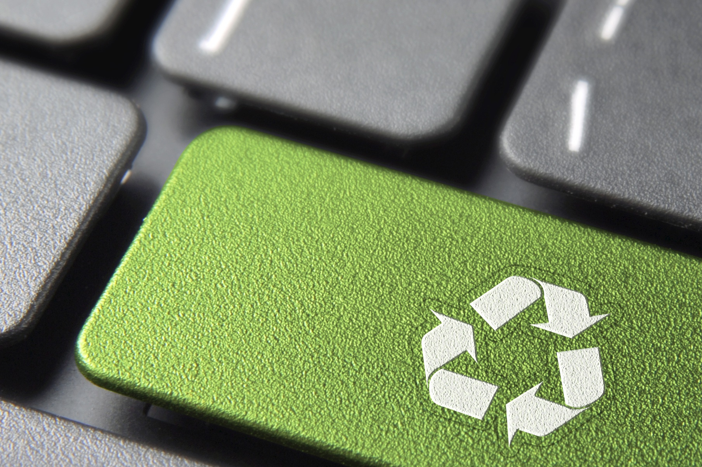

D’après le rapport annuel du registre des déchets d’équipements électriques et électroniques paru en 2018, « près de 939 millions d’équipements électriques et électroniques ont été mis sur le marché en 2018, représentant 1,9 million de tonnes. En 2018, 796 414 tonnes de déchets d’équipements électriques et électroniques ont été collectés en France pour un taux de recyclage de 73 %. » Les bénéfices économiques et environnementaux du recyclage sont considérables : il permet de protéger les ressources, de réduire les déchets, de créer des emplois, de protéger la nature et d’économiser les matières premières. Il est à noter que pour tout équipement recyclé, le taux de recyclage moyen est de 80%. Cela signifie que la majeure partie des composants d’un appareil pourront être transformés en matière première secondaire.
